El corazón del programa. El Bloque 5 ajusta el modelo del diseño que se sembró, prueba cada fuente de variación contra su propio error, calcula las medias ajustadas, las separa con letras mediante once pruebas, desglosa las interacciones en efectos simples, ajusta curvas de respuesta a los factores cuantitativos y prueba contrastes planeados. Todo con un párrafo de resultados listo para el manuscrito.
El diseño no se elige por comodidad al analizar: es la forma en que se sortearon los tratamientos en el campo. Dos tablas idénticas pueden requerir análisis distintos si una se sembró en bloques completos y la otra en parcelas divididas. El Bloque 5 ofrece trece diseños y construye para cada uno su modelo con los términos de error correctos.
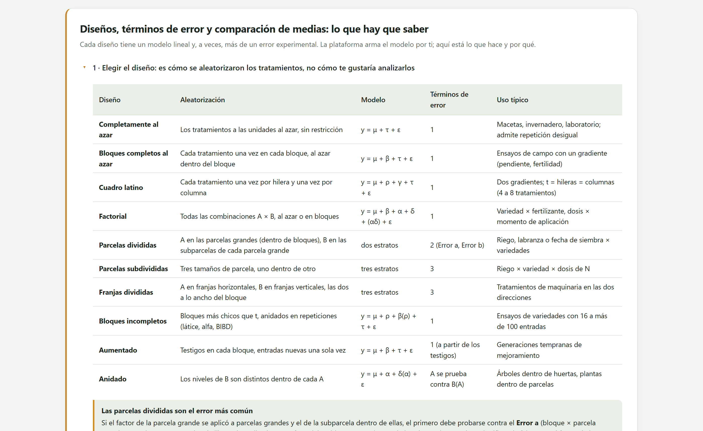
| Diseño en la app | Roles que necesita | Modelo | Errores |
|---|---|---|---|
| Diseño completamente al azar (DCA) | 1 factor | y = μ + τ + ε | 1 |
| Diseño de bloques completos al azar (DBCA) | 1 factor, 1 bloque | y = μ + β + τ + ε | 1 |
| DBCA generalizado | 1 factor, 1 bloque, varias parcelas por bloque y tratamiento | y = μ + β + τ + (βτ) + ε | 1 o 2 |
| Cuadro latino | 1 factor, fila y columna | y = μ + ρ + γ + τ + ε | 1 |
| Diseño de bloques incompletos | 1 factor, 2 columnas de bloque (repetición y bloque) | y = μ + ρ + β(ρ) + τ + ε | 1 |
| Diseño aumentado | 1 factor, 1 bloque | y = μ + β + τ + ε, con el error de los testigos | 1 |
| Factorial completamente al azar | 2 a 4 factores | y = μ + α + δ + (αδ) + ε | 1 |
| Factorial en bloques completos al azar | 2 a 4 factores, 1 bloque | y = μ + β + α + δ + (αδ) + ε | 1 |
| Parcelas divididas en bloques al azar | 2 factores (el primero en parcela grande), 1 bloque | y = μ + β + α + (βα)a + δ + (αδ) + εb | 2 |
| Parcelas divididas completamente al azar | 2 factores, 1 columna de repetición | y = μ + α + εa + δ + (αδ) + εb | 2 |
| Franjas divididas en bloques al azar | 2 factores, 1 bloque | y = μ + β + α + (βα)a + δ + (βδ)b + (αδ) + εc | 3 |
| Parcelas subdivididas en bloques al azar | 3 factores, 1 bloque | tres tamaños de parcela anidados | 3 |
| Anidado (jerárquico) | 2 factores, el segundo dentro del primero | y = μ + α + δ(α) + ε | 1 o 2 |
El menú solo habilita los diseños compatibles con los roles asignados en el Bloque 2. Los demás aparecen en gris con la razón: necesita 2 a 4 factores de tratamiento, necesita papeles de hilera y de columna, necesita varias parcelas por bloque × tratamiento. La estrella ★ sugerido marca el diseño que la app deduce de la estructura de la tabla: cuadro latino si hay fila y columna, bloques completos si hay un factor y un bloque, factorial en bloques si hay dos factores y un bloque, y así sucesivamente.
Una tabla con riego, variedad y bloque se ve igual si se sembró como factorial en bloques o como parcela dividida. La app sugiere el factorial porque es lo único que puede deducir de la tabla; si el riego se aplicó a parcelas grandes y las variedades dentro de ellas, tú tienes que elegir Parcelas divididas en bloques al azar. Lo mismo vale para las franjas y para los factores anidados. La sección 6.5 muestra cuánto cambian las pruebas.
Cada tamaño de unidad experimental tiene su propia variación. En una parcela dividida, las parcelas grandes que recibieron el mismo riego difieren entre sí más que las subparcelas vecinas que recibieron la misma variedad, porque están más lejos y son menos. Por eso el riego se prueba contra el error a (bloque × riego), con pocos grados de libertad, y la variedad y la interacción contra el error b, el residual. Usar el error b para el riego es comparar parcelas grandes con la vara de las pequeñas: se declaran diferencias que no existen. La columna Se prueba contra de la tabla de ANOVA dice, para cada fuente, contra qué error se probó.
Dos diseños muestran una casilla bajo la descripción. En DBCA generalizado, Los bloques son aleatorios prueba los tratamientos contra la interacción bloque × tratamiento, la elección correcta cuando los bloques representan ambientes que se quieren generalizar. En Anidado, B(A) es aleatorio prueba el factor superior contra el anidado: los árboles dentro de huertas son la unidad con la que se juzga a las huertas. Las covariables marcadas en el Bloque 2 se añaden a cualquier diseño y convierten el análisis en uno de covarianza.
La tarjeta 1 · Diseño y opciones reúne cinco decisiones. El análisis se calcula solo al abrir el bloque con las opciones predeterminadas y se repite con Correr el análisis.
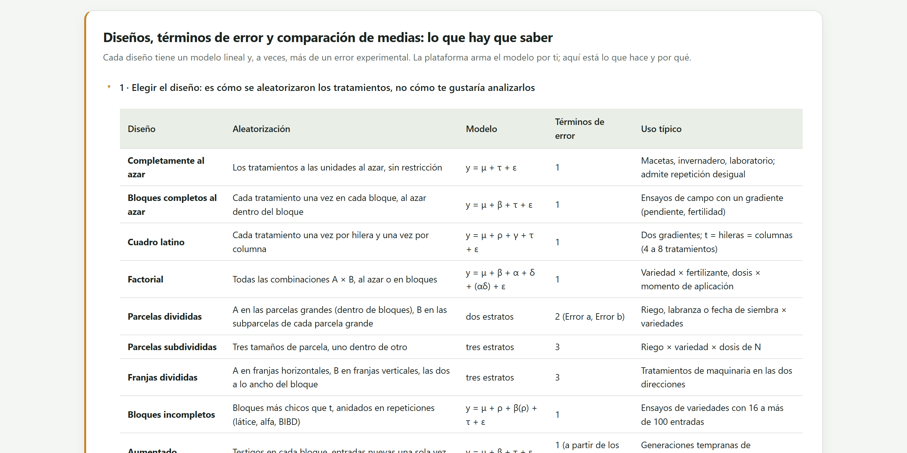
1 2 3 4 5 6 7Las sumas de cuadrados tipo I se calculan en orden: cada término se ajusta solo a los anteriores. Las tipo III ajustan cada término a todos los demás. Con datos balanceados, como todos los ejemplos del programa, ambas coinciden. Con parcelas perdidas, bloques incompletos o covariables difieren, y el tipo III da la prueba que la mayoría de los lectores espera: el efecto del tratamiento libre del orden en que se escribió el modelo. Deja el tipo III salvo que tengas una razón para un orden jerárquico.
| Prueba | Controla el error | Úsala cuando… | Letras del frijol |
|---|---|---|---|
| Tukey (HSD) es la opción por omisión para todas las comparaciones por pares: controla el error por familia. La DMS de Fisher es más potente, pero solo se defiende después de una F significativa y con pocos tratamientos. Duncan es liberal y cada vez más rechazada por las revistas. Dunnett responde una sola pregunta: ¿cada tratamiento difiere del testigo? Scheffé protege contrastes elegidos después de ver los datos. Games–Howell es para varianzas desiguales. | De la familia, todos los pares | Por omisión, para comparar todos los pares. Con repeticiones desiguales se usa la versión de Tukey–Kramer. | a · ab · b · c · c |
| DMS de Fisher | Por comparación | Pocos tratamientos (cuatro o menos), tras una F significativa, o comparaciones planeadas. | a · b · c · d · e |
| Duncan | Ninguno (liberal) | Tradicional en agronomía; muchas revistas ya no la aceptan. | a · b · c · d · e |
| Student–Newman–Keuls | Por paso | Rango múltiple; puede dar grupos no transitivos. | a · b · c · d · e |
| REGWQ | De la familia | La mejor de rango múltiple cuando muchas medias son de verdad iguales. | a · b · b · c · d |
| Bonferroni · Šidák | De la familia | Pocas comparaciones planeadas; conservadoras con muchos tratamientos. | a · ab · b · c · c |
| Holm | De la familia | Siempre preferible a Bonferroni: el mismo control, más potencia. | a · b · c · d · e |
| Scheffé | Todos los contrastes | Contrastes decididos después de ver los datos; la más conservadora para pares. | a · ab · b · c · c |
| Dunnett (contra el testigo) | De la familia, contra el testigo | Solo interesa si cada tratamiento difiere del testigo. | * · * · * · testigo · * |
| Games–Howell | De la familia | Varianzas desiguales entre tratamientos (cada par usa su propio error). | a · ab · b · c · c |
La tarjeta 2 · Análisis de varianza abre con siete tarjetas de resumen, sigue con la tabla de ANOVA, los estratos de error y la interpretación, y termina con un borrador del párrafo de resultados.
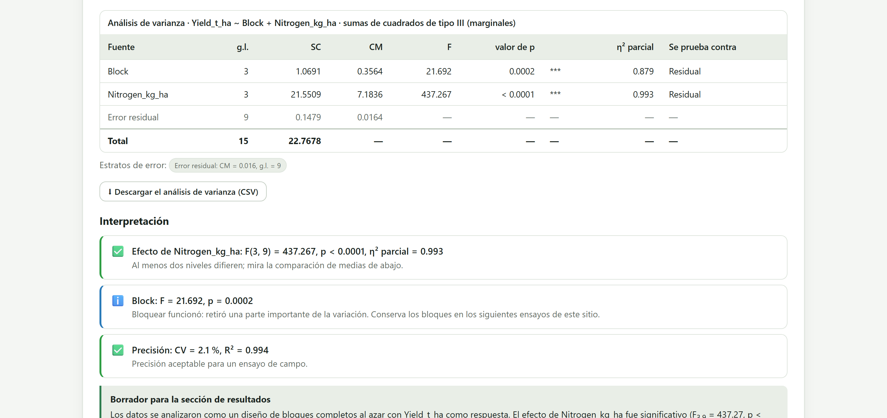
| Tarjeta | Qué es | Maíz |
|---|---|---|
| Media general | Media general de la respuesta. | 6.032 |
| CV | √CME / media × 100: la precisión del ensayo, la cifra que piden los revisores. | 2.1 % |
| R² del modelo: cuánta de la variación total explica el diseño (bloques incluidos). | Proporción de la variación total que explica el modelo, bloques incluidos. | 0.994 |
| RCME | Desviación estándar residual, √CME. | 0.128 |
| EE de una media de tratamiento | Error estándar de una media del primer factor: √(CM del error / r). | 0.064 |
| EE de una diferencia | Error estándar de la diferencia entre dos medias: √(2 CM del error / r). | 0.091 |
| g.l. del error | Grados de libertad del error; en ámbar si son menos de 6. | 9 |
| Columna | Lectura |
|---|---|
| Fuente | La fuente de variación. Las filas en gris son estratos de error. |
| g.l. · SC · CM | Grados de libertad, suma de cuadrados y cuadrado medio (SS / df). |
| F · valor de p | F = CM de la fuente / CM de su error, y su valor P. Los asteriscos marcan * P < 0.05, ** P < 0.01, *** P < 0.001. |
| η² parcial | SC de la fuente / (SC de la fuente + SC de su error): el tamaño del efecto, para acompañar al valor P. |
| Se prueba contra | El error contra el que se probó la fuente. |
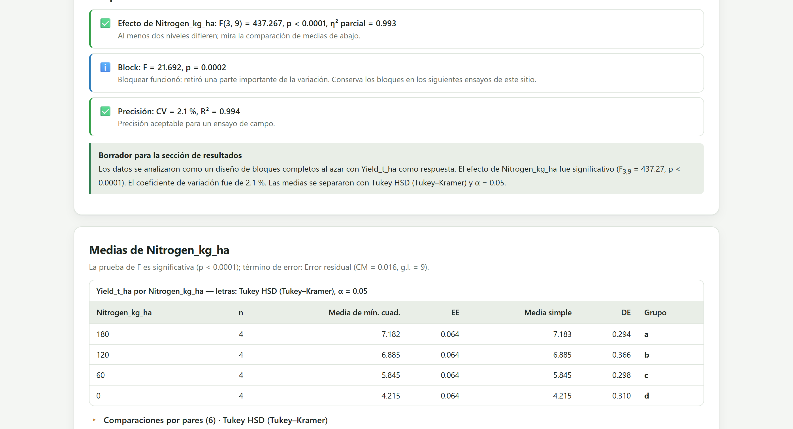
| Si… | entonces… |
|---|---|
| hay una interacción significativa | Lee las medias de las celdas y los efectos simples (sección 6.5). Los efectos principales solos pueden engañar. |
| no hay interacción y un efecto principal es significativo | Separa las medias de ese factor (sección 6.4). |
| el factor es cuantitativo (dosis, densidades, fechas) | Además de las letras, o en su lugar, ajusta la tendencia (sección 6.6). |
| el bloque es significativo | No es un resultado sobre los tratamientos: dice que bloquear valió la pena. |
| la F del tratamiento no es significativa | No separes medias con LSD: la diferencia no está protegida. Reporta la ausencia de diferencias con su potencia en mente. |
En el artículo reporta, para cada factor e interacción, F con sus dos grados de libertad y el valor P, el CV del ensayo y, de preferencia, el η² parcial.
Debajo del ANOVA, la app abre una tarjeta por cada factor de tratamiento con la tabla de medias, las letras, las comparaciones por pares desplegables y una figura de medias con letras lista para exportar.
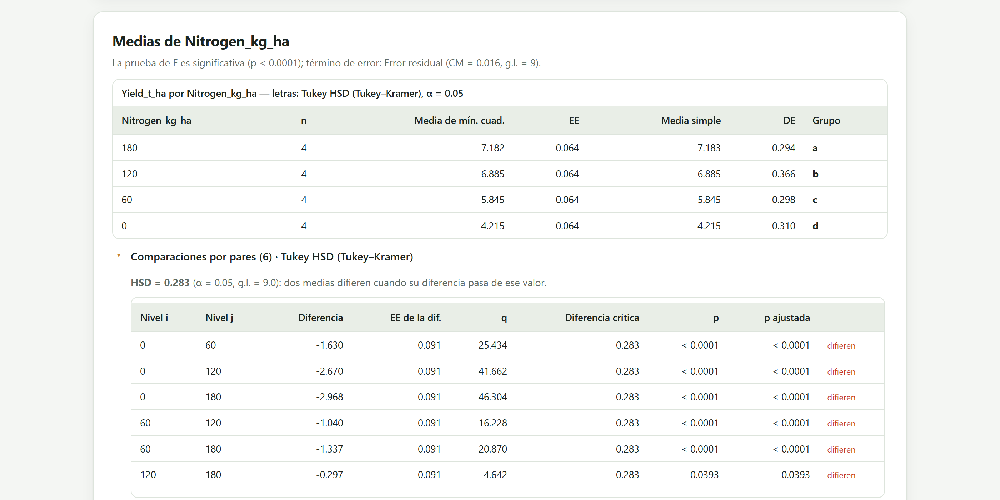
| Columna | Qué es |
|---|---|
| Media de mín. cuad. | Media de mínimos cuadrados: la media que predice el modelo con los demás factores en promedio y las covariables en su media. Con datos balanceados coincide con la media aritmética; con parcelas perdidas o covariables, la corrige. |
| EE | Error estándar de la media, con el error que corresponde al factor (el error a para la parcela grande). |
| Media simple · DE | La media aritmética y la desviación estándar, para comparar. |
| Media retro-transformada | Solo con respuestas transformadas: la media en la escala original. |
| Grupo | Las letras. Medias que comparten una letra no difieren al nivel α elegido; una media puede llevar dos letras. |
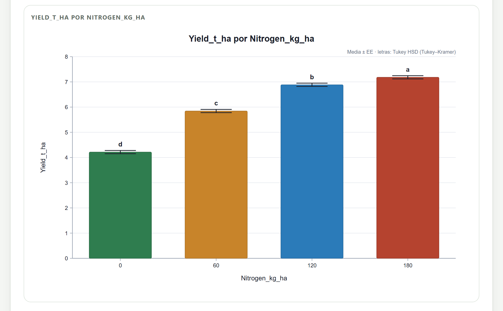
Si la pregunta es «¿qué variedades superan a la que ya siembra el productor?», no hacen falta los diez pares. Dunnett compara cada tratamiento solo con el testigo y gana potencia al hacer menos comparaciones. Al elegirla aparece el menú Nivel testigo (Dunnett).
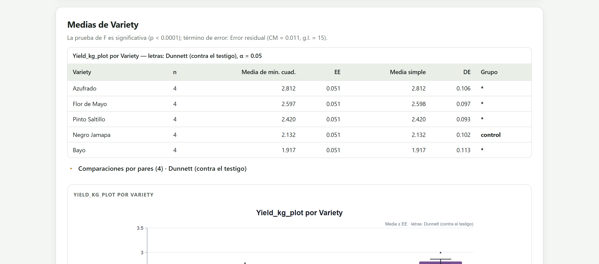
En el frijol con Tukey, Flor de Mayo lleva «ab»: no difiere de Azufrado (a) ni de Pinto Saltillo (b), aunque Azufrado y Pinto Saltillo sí difieren entre sí. No es un error del programa: las pruebas de medias no son transitivas, y «ab» es la forma honesta de decir que los datos no alcanzan para ubicar a Flor de Mayo en un solo grupo. La app construye las letras con el método de los grupos máximos, que garantiza que dos medias comparten letra si y solo si la prueba no las separó.
Con dos factores, la app añade una tarjeta para la interacción: la tabla de medias de las celdas, los efectos simples en ambas direcciones, la comparación de todas las combinaciones (salvo en parcelas divididas y franjas) y una figura de barras agrupadas con letras.
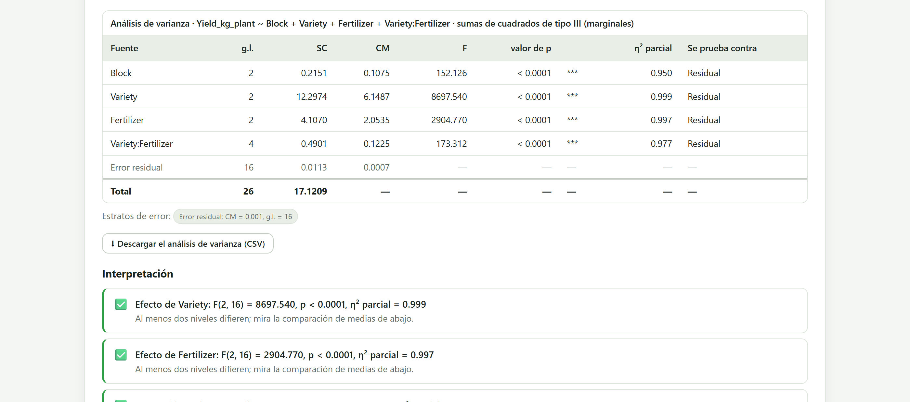
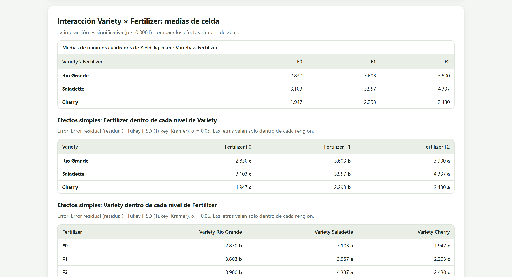
El efecto principal de la fertilización promedia su efecto en las tres variedades. Si hay interacción, ese promedio esconde que la ganancia de F0 a F2 es de 1.234 kg por planta en Saladette y de solo 0.483 kg en Cherry. Un efecto simple compara los niveles de un factor dentro de un nivel fijo del otro: la fertilización en Saladette, la fertilización en Cherry. Aquí el orden de los niveles es el mismo en todas las filas, así que la interacción es de magnitud y no de rango; si en una variedad F1 superara a F2, la recomendación dependería de la variedad.
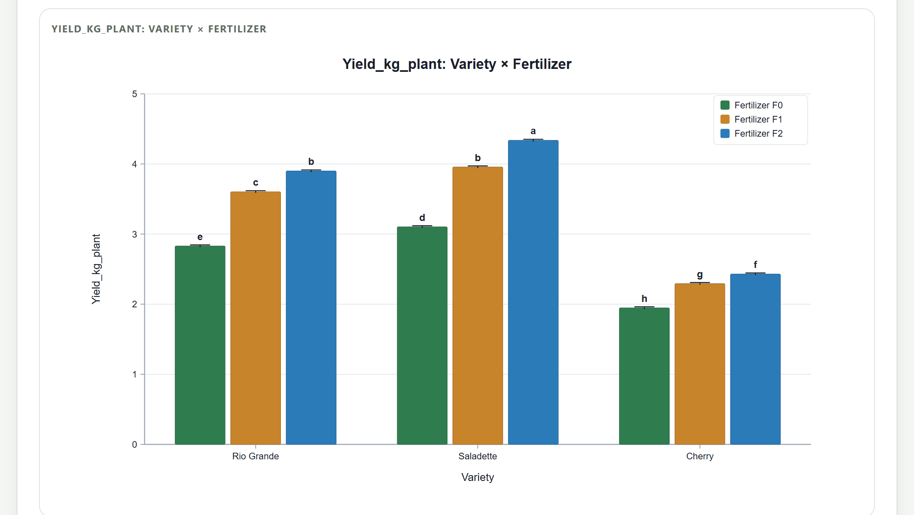
El ejemplo de riego × variedad se sembró con los dos sistemas de riego en parcelas grandes y las cuatro variedades en subparcelas. Se analiza eligiendo Parcelas divididas en bloques al azar (parcelas grandes dentro de bloques), con el riego como primer factor.
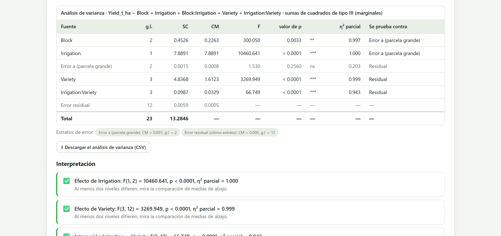
| Fuente | Factorial: F | Factorial: gl del error | Dividida: F | Dividida: gl del error |
|---|---|---|---|---|
| Riego | 14 875.0 | 14 | 10 460.6 | 2 (error a) |
| Variedad | 3 040.0 | 14 | 3 269.9 | 12 |
| Riego × variedad | 62.1 | 14 | 66.7 | 12 |
En este ejemplo didáctico todos los efectos son tan grandes que el veredicto no cambia. Lo que sí cambia es la base de la prueba del riego: 14 grados de libertad en el factorial, 2 en la parcela dividida. Con F crítica de 4.60 contra 18.51 para α = 0.05, un efecto de riego moderado que el factorial declararía significativo puede no serlo en realidad. En un ensayo real, con un error a varias veces mayor que el b, la F del factor de parcela grande puede caer a la décima parte. El análisis correcto es el del diseño que se sembró.
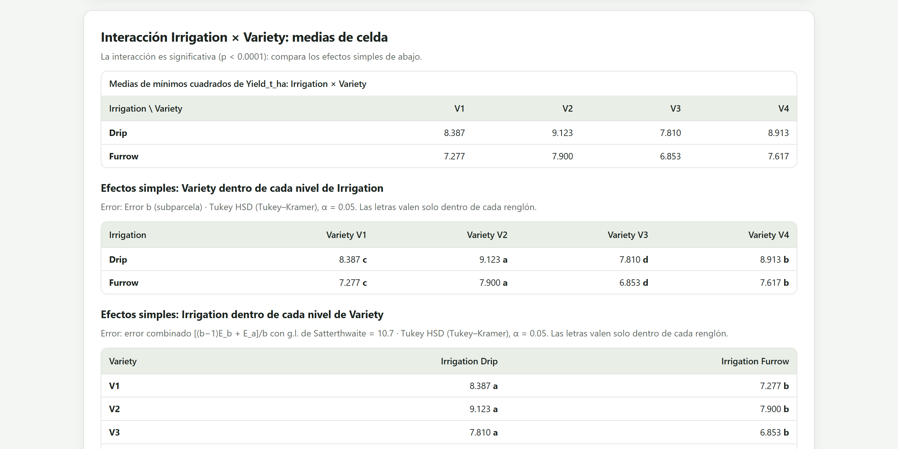
Cuando los niveles de un factor son números (dosis, densidades, fechas) y hay tres o más, la app añade a su tarjeta un análisis de tendencia con polinomios ortogonales y la curva ajustada. Las letras dicen qué dosis difieren; la curva dice cómo responde el cultivo y dónde está el óptimo.
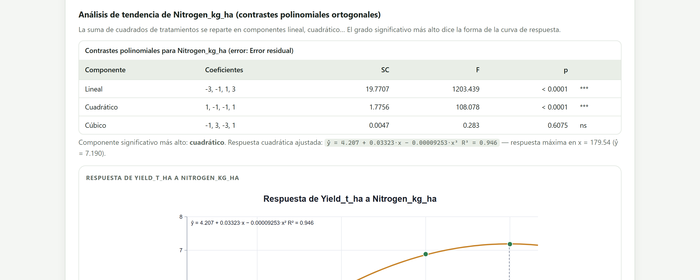
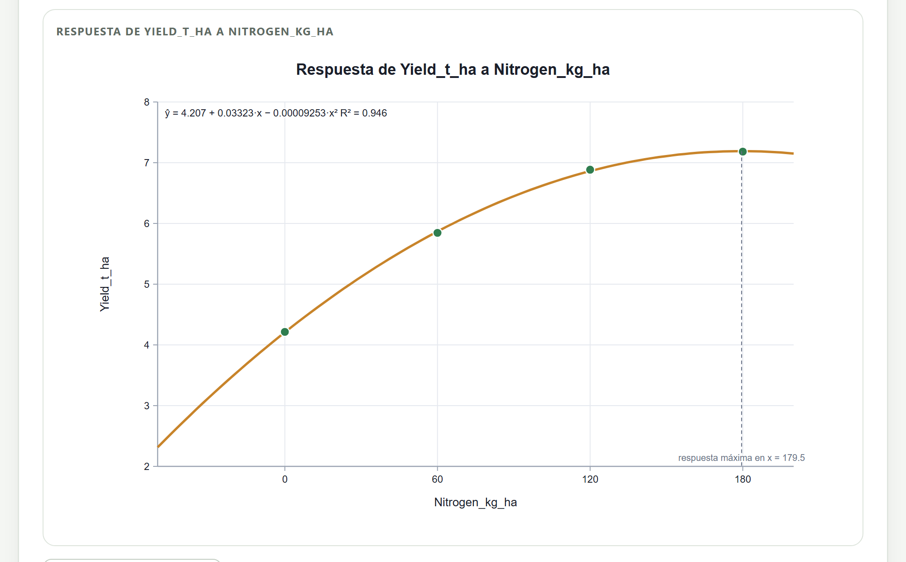
El máximo de 179.5 kg cae prácticamente en la dosis más alta del ensayo, 180 kg. Eso no demuestra que 180 kg sea el óptimo: dice que el ensayo no llegó a la zona donde el rendimiento empieza a bajar, y que la forma cuadrática, simétrica por construcción, pone ahí su vértice. Una curva no se extrapola fuera de las dosis probadas. Además, el óptimo biológico no es el económico: con el precio del grano y del fertilizante, la dosis más rentable está antes del máximo, donde la pendiente de la curva iguala la relación de precios.
| Si el componente significativo más alto es… | entonces… |
|---|---|
| ninguno | La respuesta no cambia sistemáticamente con la dosis. |
| lineal | Recta: cada unidad de dosis añade lo mismo. No hay óptimo dentro del intervalo; conviene probar dosis mayores. |
| cuadrático | Curva con máximo o mínimo; reporta la ecuación, R² y el óptimo si cae dentro del intervalo. |
| cúbico o mayor | Forma más compleja; con cuatro o cinco dosis suele ser ruido o una dosis atípica. Revisa antes de interpretarlo. |
Los contrastes polinomiales exactos requieren dosis igualmente espaciadas; la curva se ajusta con los valores reales de las dosis.
La última tarjeta del bloque, Contraste a la medida, prueba comparaciones planeadas entre grupos de tratamientos. Se elige el factor, se escribe un coeficiente por nivel en el orden que muestra Orden de los niveles (deben sumar cero) y se pulsa Probar el contraste. Cada contraste se acumula en la tabla.
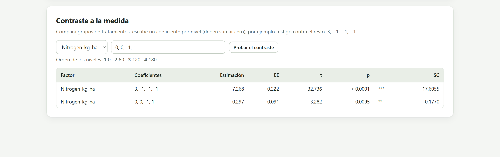
La diferencia entre 180 y 120 kg es la misma, 0.297 t/ha, con el mismo error estándar. Tukey la compara con la distribución del rango de cuatro medias, porque protege los seis pares a la vez; el contraste la compara con una t simple, porque es una pregunta planeada antes del ensayo. Si la pregunta «¿vale la pena subir de 120 a 180 kg?» estaba en el protocolo, el contraste es legítimo y más potente. Si se eligió después de ver las medias, la protección correcta es Scheffé.
| Pregunta | Coeficientes | Nota |
|---|---|---|
| Testigo contra el resto | 3, −1, −1, −1 | El testigo en primera posición. |
| Dos grupos de dos | 1, 1, −1, −1 | Por ejemplo, fuentes orgánicas contra minerales. |
| Un par concreto | 0, 0, −1, 1 | Equivale a una prueba t con el error del ANOVA. |
| Tendencia lineal | −3, −1, 1, 3 | La misma que calcula el análisis de tendencia. |
Si en el Bloque 4 creaste una columna transformada, elígela en Variable de respuesta. El ANOVA, las letras y la curva se calculan en la escala transformada, y la tabla de medias añade la columna Media retro-transformada. Si hay covariables, entran al modelo como una fila más de la tabla de ANOVA y las medias se ajustan a su valor promedio.
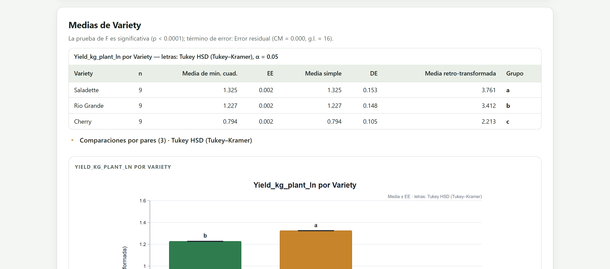
Yield_kg_plant_ln. Las letras (a, b, c) salen de la escala logarítmica; la columna destransformada da las medias geométricas en kg por planta: Saladette 3.761, Rio Grande 3.412, Cherry 2.213. Son algo menores que las aritméticas porque la media de los logaritmos siempre lo es.0,0,-1,1 y pulsa Probar el contraste para la pregunta planeada de 120 contra 180 kg.Irrigation es el primer factor: en las parcelas divididas, el primer factor es el de la parcela grande.Yield_t_ha ~ Row + Column + Treatment.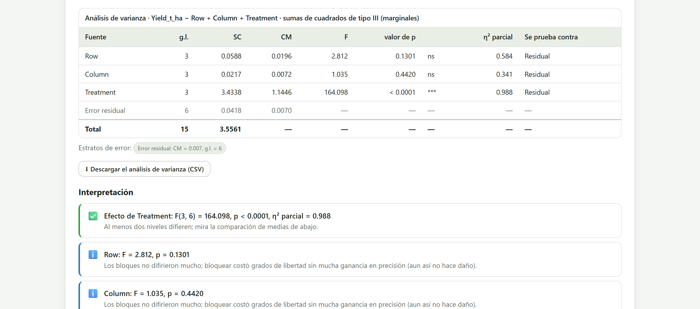
La app recuerda el diseño que elegiste mientras trabajas con la misma tabla y los mismos roles, aunque cambies de bloque o de respuesta. Al cargar otro archivo o cambiar los roles en el Bloque 2, vuelve a proponer el diseño sugerido para la nueva estructura. Si un análisis falla (por ejemplo, un modelo sin grados de libertad para el error), la tarjeta de resultados se oculta y solo queda el mensaje, para que no se confunda con el análisis anterior.
El diseño lo decide el campo y la app lo traduce en un modelo con sus estratos de error. La tabla de ANOVA se lee de la interacción hacia los efectos principales; las letras dependen de la prueba elegida, que se declara; y los factores cuantitativos piden una curva, no solo letras. Un contraste planeado responde mejor que diez comparaciones por pares la pregunta que motivó el ensayo.
Con los resultados en la mano, el siguiente paso es presentarlos. El capítulo del Bloque 6 recorre la galería de figuras que se construye con este análisis, los estilos predefinidos de revista, la edición, las figuras multipanel y la exportación a la resolución que pide cada revista.